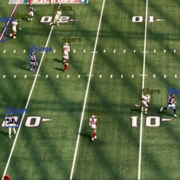

Projects

Temporal Graph Model for Flight Data
Built a temporal property graph in Neo4j to model historical flight data using interval-labeled edges. Implemented traversal algorithms in Python to compute time-sensitive paths, enabling queries like earliest arrival and fastest route, and analyzed performance across increasing data sizes.
View Project

Assistive Tool for Colorblind Sports Viewers
Built a Computer Vision tool to detect and label entities in American Football broadcast footage, receiving 87.5% positive feedback from colorblind users using Python and OpenCV.
View Project